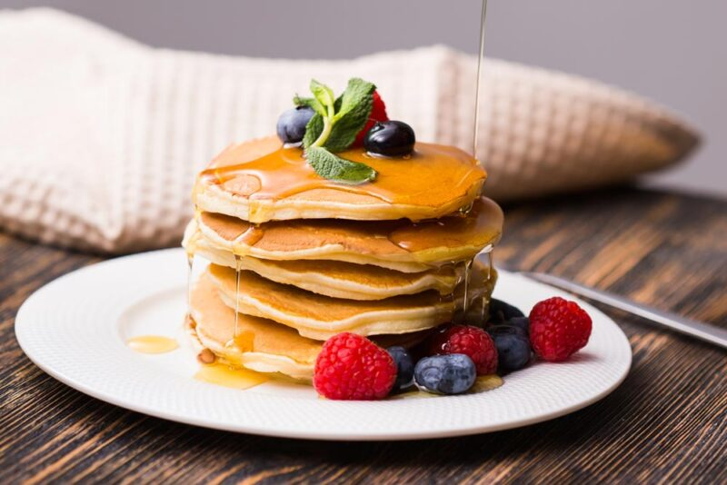

Pancakes

Pancakes are a food that has become very popular over the years, they are a type of flat,
circular pancake. Their preparation consists of a liquid batter that is cooked in a pan
and the best part is that they only take 5 minutes to cook.
Ingredients
- 2 eggs
- 1 pinch of salt
- 3 tablespoons of whole wheat flour
- 3 tablespoons of all-purpose flour
- 250ml of milk
- vanilla extract
- 80g of melted butter
- 1/2 teaspoon of baking powder
- 3 tablespoons of sugar (optional for sweet pancakes)
- To serve: syrup, honey, nuts, fresh fruit, chocolate, peanut butter, dulce de leche.
Steps
- Place one egg in a bowl with a pinch of salt and beat.
- Add the whole wheat flour and all-purpose flour and mix well until combined. Add a
splash of milk to make it easier to beat.
- Add vanilla extract and sugar if you want them sweet. Add baking powder and beat
vigorously. Add melted butter.
- The mixture will be quite liquid. Chill in the fridge for half an hour, this step is
important so that the flour absorbs the liquid and thickens the mixture.
- In a non-stick frying pan with a little butter or cooking spray, place about two
tablespoons of the mixture. Cook until golden brown on both sides and serve.